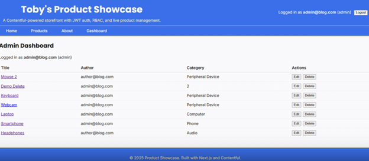

Product Showcase Website
A full-stack web project built with Next.js and Contentful CMS. This was one of the projects that really pushed me further into structured frontend development and working with real external data instead of hardcoded content.

Overview
This project was a dynamic product listing website built with Next.js, React, and Contentful. Products were managed through a headless CMS and rendered dynamically on the frontend. I also implemented authentication context and role-based access logic, which made the application feel closer to a real production system.
What worked well
The modular approach helped a lot. I broke the project into smaller parts like CMS setup, routing, data fetching, authentication, and protected UI logic. That made the debugging process more manageable and helped me keep the structure cleaner than some of my earlier projects.
Challenges and learning
The hardest parts were authentication, managing state, and understanding how strict framework conventions can be. Working through routing issues, environment variables, and React context problems taught me more than just getting the app working would have on its own.
Why it belongs in this portfolio
This project shows modern web development skills, cleaner project organization, external API use, authentication logic, and a stronger understanding of how a frontend application should be structured.
Project visual
This dashboard view highlights the CMS-managed products, category structure, and admin controls that made the project feel closer to a real production system.